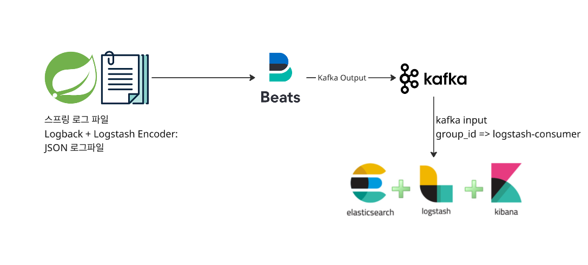
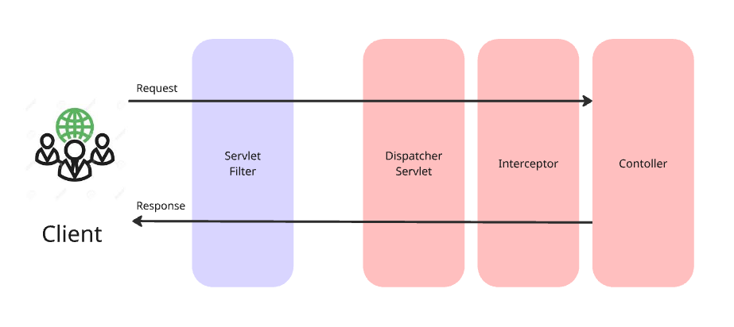
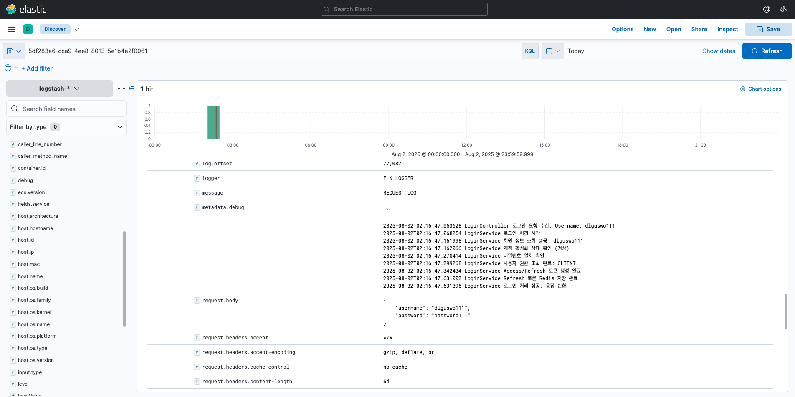

MSA 환경에서 장애 원인을 찾기 위해 로그를 직접 파일 단위로 뒤지는 방식은 요청 흐름 추적과 통계 집계에 한계가 있었습니다.
단순 텍스트 로그는 Kibana에 적재하더라도 requestId나 에러 유형으로 빠르게 필터링하기 어렵기 때문입니다.
이를 해결하기 위해 Spring Boot 서비스에서 JSON 구조화 로그를 생성하고, Filebeat → Kafka → Logstash → Elasticsearch → Kibana로 이어지는 로그 수집·분석 파이프라인을 구성했습니다.
RequestLoggingFilter와 MDC 기반 requestId, debug 히스토리를 결합해 요청 단위로 처리 흐름을 추적할 수 있게 했습니다.
기술 스택
Spring Boot 3.xLogbackLogstash Logback EncoderFilebeatKafkaLogstashElasticsearch 7.17KibanaMDCContentCachingWrapperDocker
전체 로그 수집 파이프라인

Spring 서비스는 Logback + Logstash Encoder로 JSON 로그 파일을 만들고, Filebeat가 이를 수집해 Kafka로 전달합니다.
Logstash는 Kafka 메시지를 소비해 Elasticsearch에 저장하고, Kibana에서 검색·시각화합니다.
Request Logging Filter

Servlet Filter는 DispatcherServlet 앞단에서 동작하므로 요청/응답 전체를 감싸고, requestId와 요청·응답 데이터를 구조화 로그로 남기기에 적합합니다.
핵심 기술 의사결정
1. 단순 텍스트 로그에서 구조화 JSON 로그로 전환
문제
텍스트 로그만 저장하면 Kibana에서도 필드 검색, 필터링, 집계가 어렵고 장애 흐름을 눈으로 따라가야 했습니다.
선택
logstash-logback-encoder를 사용해 request, response, metadata, exception을 JSON 필드로 저장했습니다.
효과
Elasticsearch에 구조화 필드로 저장되어 requestId, status, elapsedTime, exception 등으로 검색·집계할 수 있게 했습니다.
2. RequestLoggingFilter + ContentCachingWrapper
문제
HTTP body stream은 한 번 읽히면 다시 읽을 수 없어, 로그 출력 과정에서 요청/응답 body를 읽으면 정상 응답이 깨질 수 있습니다.
선택
ContentCachingRequestWrapper와 ContentCachingResponseWrapper로 요청/응답을 감싸고, 필터 종료 시 copyBodyToResponse()를 호출했습니다.
근거
로그를 위해 body를 읽더라도 실제 클라이언트 응답이 유실되지 않도록 보장했습니다.
3. MDC requestId와 debug 히스토리
문제
로그가 여러 서비스와 여러 클래스에 흩어지면 특정 요청의 전체 흐름을 연결하기 어렵습니다.
선택
요청마다 UUID requestId를 생성해 MDC에 저장하고, 비즈니스 로직의 주요 단계는 MDCHelper.appendDebug()로 누적했습니다.
효과
Kibana에서 requestId 하나로 요청 로그, 예외, 중간 상태, 변수 값을 한 번에 추적할 수 있게 했습니다.
구현 포인트
RequestLog 모델
requestId, request 정보, response 정보, metadata, exception을 하나의 구조화 객체로 묶어 로그에 남겼습니다.
MDC clear 처리
요청 종료 후 MDC.clear()를 호출해 스레드 재사용 환경에서 이전 요청의 requestId와 debug 값이 오염되지 않도록 했습니다.
Kibana 검색성
로그 필드가 JSON으로 분리되어 requestId, status, exception, elapsedTime 등 운영자가 실제로 찾는 조건으로 검색할 수 있습니다.
원인 분석 속도 개선
파일 로그를 직접 뒤지는 대신 Kibana에서 요청 단위로 흐름을 추적해 장애 원인 분석과 트러블슈팅 시간을 줄일 수 있습니다.

Kibana 대시보드에서 구조화 필드 기반으로 로그를 검색하고 요청 흐름을 추적하는 운영 화면입니다.